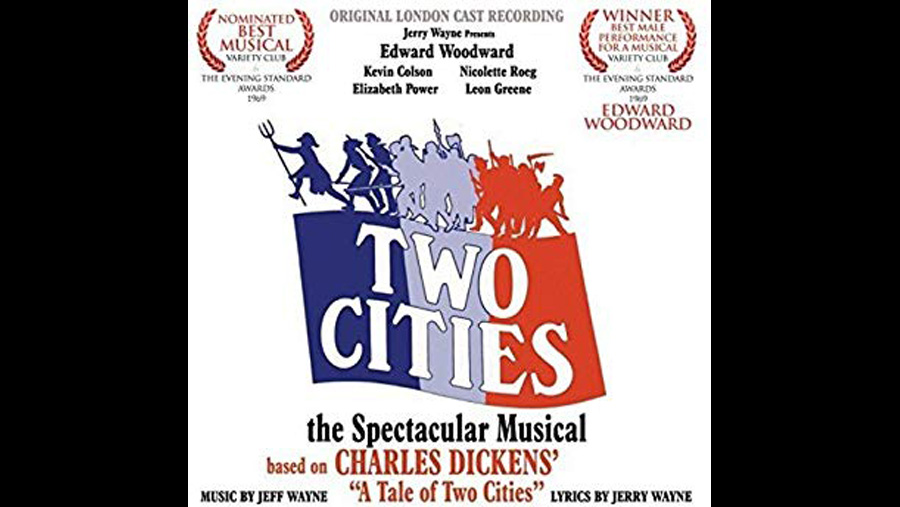

| Character | Actor |
|---|---|
| Sydney Carton | Edward Woodward |
| Charles Darnay | Kevin Colson |
| Lucie Manette | Elizabeth Power |
| Madame Defarge | Nicolette Roeg |
| Monsieur Defarge | Leon Greene |
| C J Stryver | Anthony Dawes |
| President of Court | George Reibbitt |
| Role | Person |
|---|---|
| Music | Jeff Wayne |
| Lyrics | Jeff Wayne |
| Book | Constance Cox |
Reflecting on Two Cities, composer Jeff Wayne commented: "Two Cities opened at the Palace Theatre, Cambridge Circus in February 1969, but very little has survived about it. What has survived reveals it being received by the critics in the way we feel about Marmite! Or perhaps as Mr. Dickens' opening line exclaims - "It was the best of times, it was the worst of times...". I have distinct memories of standing ovations on opening night ("the best of times...") followed by the Marmite reviews and largely empty houses for the first few weeks ("the worst of times..."). But then 'word-of-mouth' spread that in fact Two Cities was pretty good, including an award-winning performance by its leading man, Edward Woodward. While the remaining run played to virtually sold-out audiences, 'Notice' from the theatre owners had already condemned Two Cities to the guillotine. NOTE: 'Back in the day', cast albums were recorded on the first Sunday after opening night with the cast and musicians from the show. A few run-throughs and takes onto stereo tape were allocated, and that was your lot!"